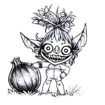
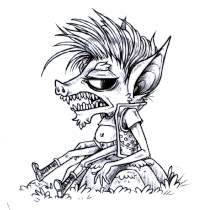
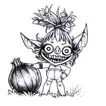
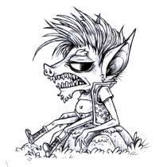

About
About Projects
Projects Books
Books Games
Games Stories
Stories Store
Store Notes
Notes How-to
How-toIn the words of its creator, Goblin Week entails making a bunch of art, or whatever, of goblins every day for a week.. It's a low-pressure community art project that happens ever year on the first monday of the last week of January.
I participated for the first time in January 2025(Jan 19-25th), here are my entries:


 



In order, their names are Arnar, Helka(and Yammers), "out of bag" Yammers, Joi, Hannes, Jorn, Neils, Björn & Elín.